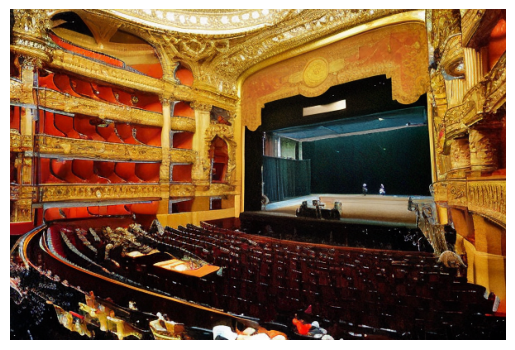

CS 180: Scene Expansion with Differentiable Rendering and Diffusion Inpainting |
IntroductionThe original goal of this project was to expand any two-dimensional image of a scene into an immersive three-dimensional environment, with novel viewpoints covered by diffusion. However, this proved to be more difficult than anticipated due to challenges in iterative point cloud alignment. After days spent on unsuccessfully attempting to align the dense point clouds, I settled on one-step scene expansion as a pre-requisite to the larger, more complex task. On this page, I share some of my results, alongisde my observations on strengths and shortcomings of my approach. Lastly, please note that I still intend on achieving my original goal. I will continue to work on this project, as its output has exciting potential for generative models for game design, VR, and 3D dataset augmentation. If you're interested, please return to this page in the future. |
Scene Expansion ResultsI will now present some results. To begin with, let me share one of my primary inspirations for this project, the painter Stanislav Zhukovsky. I recently came across his catalog of paintings of rooms, and I felt as though I wanted to experience such scenes for myself. Here is the first painting of his that I found, alongisde its depth map: Here is what the point cloud looks like when I render it with a camera that is rotated 5 degrees to the left. I also include the mask that I use to inpaint, and the inpainted result. Lastly, here are the inpainted renders with camera rotations 'left', 'right', 'up', and 'down', respectively. For the result of the results, you will see the original image with the depth map, followed by the inpainted renders in this exact order. I show similar results for two more Zhukovsky paintings. An important thing to note here is that you may see some strange gray slivers in the results. This is where the camera renders regions that were occluded by closer objects in the original point cloud. This is common in many of my results. At times, the slivers are so large that they actually change the original image quite significantly. I have attempted to address this by manually setting the initial position for the camera, though in the future I will develop a more robust means of placing the initial camera. 
Here are some results for some famous Baroque paintings. As you can see in the second example, the sky is not typically included in the MoGe point clouds, meaning it must always be inpainted. Given the nature of diffusion, this often leads to strange (but interesting) results. I'm particularly fond of the third result, where the sky has been replaced by what seems like blotches of paint. Additionally, you may see in the depth map of the second image that while most of the image is close, there exists a small portion that is incredibly far. This is another circumstance that requires me to meticulously place the initial camera, which I also hope to address automatically in the future. Next, we have some results from video games. In order, they are Read Dead Redemption 2, Sekiro: Shadows Die Twice, and Assassin's Creed: Unity. There are a few things to note here. Firstly, it is increasingly evident that this procedure struggles with creating consistent skies. However, I do enjoy the results, particularly where the sky is a key element to the scene, such as in the second example. The various inpainted skies provide an additional degree of novelty, allowing for the same scene to tell many stories. Nevertheless, I do recognize the importance of consistency for realistic applications. One way this inconsistency could be addressed would be by adding back the sky in the masked region. The other thing I want to mention is how in the third example, it is particularly difficult to get a good result. I wanted to include this to portray how the content of the scene matters for my process. Namely, the image portrays a riot during the French revolution, and is full of smoke. I believe this smoke made it more difficult for diffusion to contextualize from the rest of the image. This is important to keep in mind for dynamic scenes with elements such as this. 
Of course, we must include results for realistic images as well. Here, I want to draw your attention to the very last image, the 'down' rotated render of the dinosaurs, where we see that the inpainted region is essentially junk. My belief is that this stems with issues with the receptive field of the inpainting process. Namely, we see that the region closest to the inpainted region lacks significant detail, which may make it hard for a diffusion model to properly fill the scene. Though this can happen with any image, I found that the smooth floor of the museum was a particularly good example of this shortcoming. A solution to this would be to experiment with specialized inpainting models, such as LaMa. I did not do this for this stage due to Stable Diffusion's inpainting model being incredibly accessible and sufficient for most tasks.

|
Additional Remarks and Next StepsI will explain a bit more about the bottlenecks in my process. The issue is not with rendering the point clouds, as this can be done blazingly fast even for clouds with hundreds of thousands of points. Rather, the issue is in handling point cloud data and merging. MoGe, the software that I used for point cloud generation, must be called with a script, and does not return all of the data within code. It must be read from the file, which takes a significant amount of time. I attempted to get around this by using the points and depth map from the MoGe API to triangulate faces on my own, but this was incredibly inefficient and innacurate compared to the script. Furthermore, point cloud alignment was incredibly difficult. I began by scaling clouds to the same size, applying an inverse transform to the new cloud, and then applying iterative point cloud (IPC) from Open3D. I tried many versions of IPC, including a RANSAC-based version. Though the clouds got quite close, they could not align perfectly, so this effort was futile. Even if they were able to align, my original goal is still out of reach given the current structure of my pipeline. Having to generate point clouds, fetch them, and combine them takes a significant amount of time, so while tiling a scene with them may be possible with my approach, it will not be efficient. I will be actively seeking to refine my approach, as I am very invested in my envisioned outcome. Below, you may see video renders that I have created. My vision is that a fully realized pipeline will be able to inpaint the missing regions as the camera reaches unseen regions, creating an immersive experience. I will achieve this, whether it is with a refined version of my current process or with a differnet approach. 


|